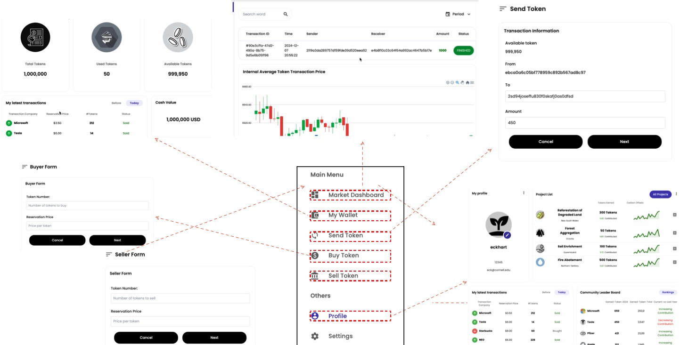
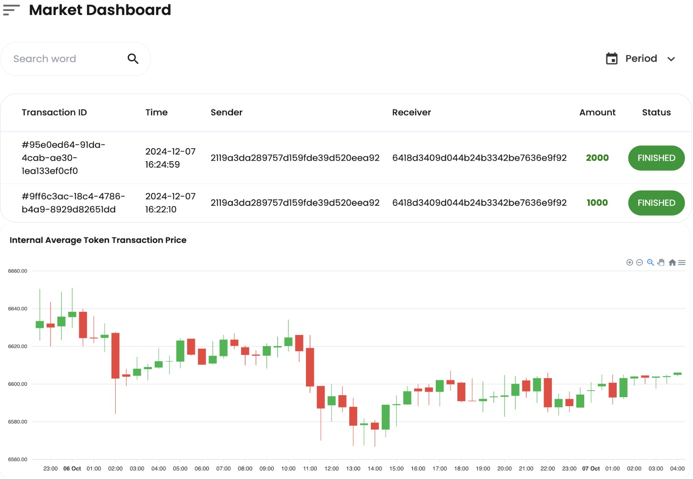
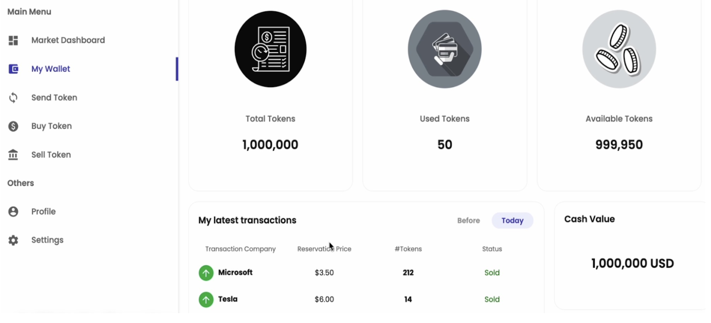
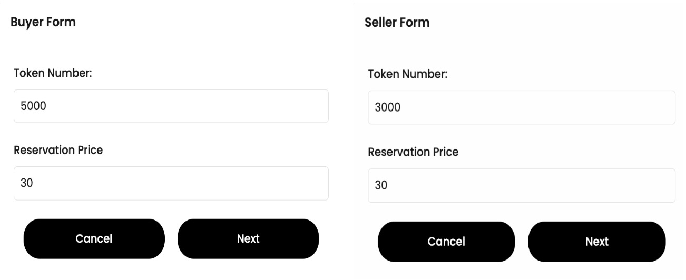
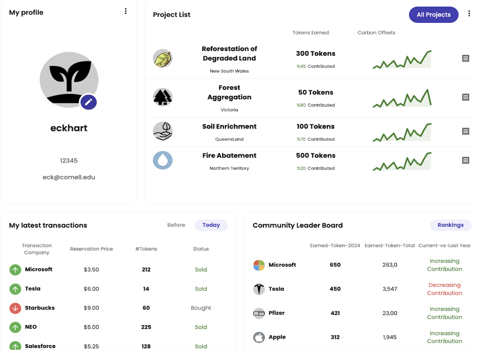

- Led the full-stack development of a blockchain carbon market platform, deploying chaincode using Docker, with Golang and Node.js for backend, and TypeScript with React for frontend and API gateway. Enabling the tracking and trading of carbon credits for climate actions across 50+ entities (corporations, cities, states, etc.).
- Implemented token issuance, transaction, and clearance mechanisms in smart contracts. Simulated over 10,000 carbon credit trades with real data using CouchDB, boosting carbon tracking efficiency by 35% over traditional systems.
- Utilized cutting-edge technologies such as blockchain, Internet of Things (IoT), and digital twins to improve transparency and security, resulting in a 30% reduction in fraudulent carbon credit claims.
- Skills/Technologies: Node.js, TypeScript, React, GoLang, CouchDB, Docker, Blockchain, IoT
About the Project
"Transparent. Secure. Smarter Carbon Trading."
DEMO

Objectives
Voluntary carbon market faces many challenges such as inefficient trading, credibility issues, and double counting. To solve the challenges, this project built and analyzed how blockchain technology, in conjunction with a double auction mechanism, enhances the carbon credit trading process by keeping immutable records and allowing for timely interaction between buyers and sellers.

Carbon Market Dashboard
The Carbon Market Dashboard gives users real-time insights into market activities, it functions as a primary interface to exhibit trades in progress (including their corresponding id, amount, and status). Additionally, an insightful graph is attached at the bottom of the dashboard to illustrate the “Internal Average Token Transaction Price” in USD.

Wallet Screen
The wallet screen consists of the number of total tokens (sum of used tokens and available tokens), separate displays of used tokens and available tokens, latest transaction histories, and the token cash value in USD to provide a general overview of the user's wallet status.

Token Trading
The trading module implements the double auction mechanism by letting the buyer submits bids while the seller submits asks, each with the party's corresponding reservation prices.
The smart contract periodically matches the highest bid from a buyer with the lowest ask from a seller by setting up a timer. Once a match is found, a transaction is generated and recorded into the ledger, then deducting funds and issuing carbon credits for each party.

Personal Profile
The goal of creating a User Profile section is to make the platform more user-friendly so that users can have a general overview of their own information. The section is composed of user information (including user name, phone, email address, etc.), transaction history, a feed about available projects in the carbon market, and a leader board of the top companies who have earned the most tokens.